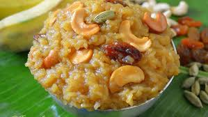
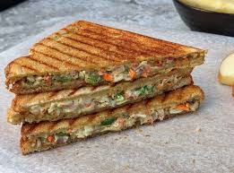

ChakkaraPongali
Chakkara Pongali is a delicious south Indian festive dish made with rice and moongdal with ghee and sugar/gaggery , cardamoms and cashew nuts.
It is traditional dish mostly made to offer the Gods onspecial occasions and festivals.
It is made in many traditional South Indian homes on the day of Makara Sankranthi, the Indian harvest festival.
This dish is said to have been prepared by our ancestors to signify and celebrate -abundance adn prosperity after the harvest.

PavBhaji
Pav Bhaji is popular Indian street food from Mumbai where dinner rolls/buns are served with spicy mashed veggies topped with dollop of butter.

PaniPoori
It is a common street food in the Indian subcontinent. It is often spiced with tamarind chutney, chili powder, or chaat masala.

PaneerBiryani
Paneer Biryani is a delicious vegetarian layered dish of paneer, dum cooked with spices, herbs and basmati rice.
Making this special dum paneer biryani is a labor of love and is great to make for special occasions or when
the cravings kick-in for a real good vegetarian Biryani.

BataniChat
Batani Chaat (Matar Chaat) is a street-style Indian snack made with dried white peas, topped with onions, tomatoes, chutneys, and spices.

Sandwich
This creamy vegetable sandwich is a cheesy, loaded with veggies, and super delicious easy back to school recipe!
